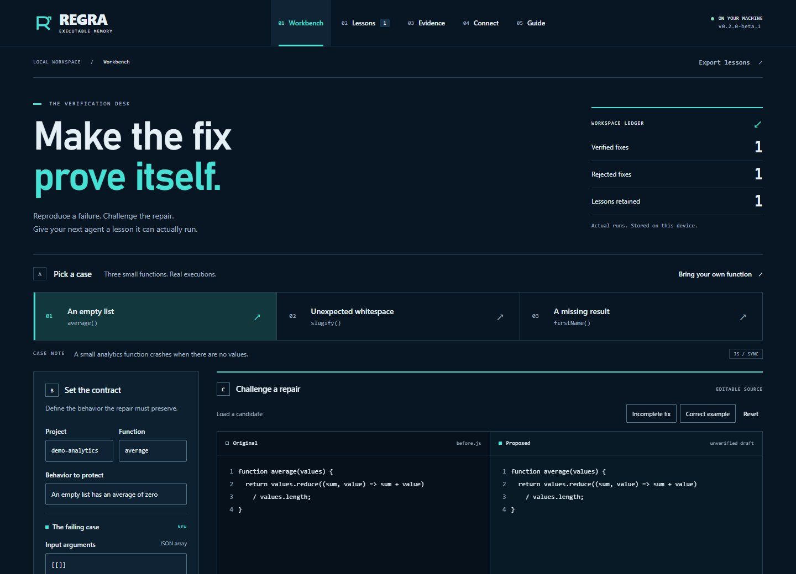

Test a fix.
Fix the failing input. Keep the behavior that already works.
An empty list should return zero.
average.jsOriginal functionbefore
function average(values) {
return values.reduce((sum, value) => sum + value)
/ values.length;
}function average(values) {
return 0;
}Test results
5 cases · 3 runs each| Case / expected | Before | After |
|---|
Run the selected patch to compare its results with the original function.
Inspect test contract
Prepared examples run in your browser. Lessons reset on reload.
Make it part of your project.
Node.js 22.13+ and Git. Choose your connection.
Install the package
Install from the GitHub repository. A release on the npm registry is pending.
npm install --global github:mahekara28/regraInstalling from a local clone
Run these commands from the REGRA repository folder:
npm ci
npm install --global .Configure your project
Open a terminal in an existing project folder. The dot means “this folder”; --demo adds a sample case.
regra init --root . --demo
regra connect --client cursor --root .
regra doctor --root .Adds REGRA to .cursor/mcp.json. Doctor checks the local MCP server.
Restart your agent
Open the project, accept the normal MCP trust prompt and try this request:
First request for your agent
Call regra_status and regra_context. Inspect the average case and its expected behavior. Verify the original and fixed functions in regra-examples using the caseFile and caseHash returned by context. Show me the result and proof ID.
The agent starts REGRA over stdio. A dashboard server or REGRA API key is not required.
What this beta checks
Reviewed, synchronous JavaScript functions with JSON inputs and outputs. Cases must reproduce the bug, preserve existing behavior and pass three repeated runs. REGRA does not retrain models or guarantee untested behavior. Verification rules
Free, local, and agent-independent
MIT licensed. No paid REGRA service. Your chosen agent may have its own costs. MCP makes the tools available; required CLI checks in CI enforce their use.
Open the local workbench
regra ui --root .
